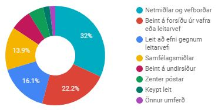
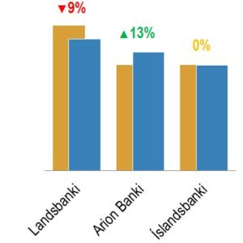

Mat á árangri af vefstarfi
Greiningarvinna, uppsetning markvissra mælinga og mælaborð fyrir stjórnendur.
Þú ert væntanlega þegar að safna margvíslegum gögnum. En ertu að fá út úr þeim þær upplýsingar sem þú þarft? Vefgreining umbreytir gögnum í upplýsingar sem þú notar til að taka skynsamlegar ákvarðanir og nýta betur það fjármagn sem er bundið við vefmálin.
Skipta má þjónustunni í nokkra flokka:
Forgreining

- Uppsetning vefmælinga skoðuð með tilliti til þess hvort eitthvað þurfi að bæta
- Felur í sér yfirlitsgreiningu á vefumferð þar sem kastljósinu er beint að þróun umferðar og veftækni gesta
- Grunnurinn lagður að árangursmælingum sem getur verið í formi sölu, pantana, skráningu á námskeið, niðurhal, lestur á greinum o.fl.
Forgreining leggur grunninn að markvissu starfi á netinu
Uppsetning á skýrslum og stjórnborðum

- Langtímaþróun umferðar og helstu lykilþátta
- Dagleg umferð og árangur
- Lestur á fréttum og gæðamæling á lestri
- Árangur af samfélagsmiðlum
- Árangur af póstlistum
- Virkni leitarorða hjá leitarvélum
- Uppsprettur netviðskipta
Stjórnborðin draga saman upplýsingar úr ólíkum kerfum og setja þær fram með aðgengilegum hætti
Viðbótarþjónusta

- Greining á samkeppnisstöðu á vefnum og í leitarvélum
- Uppsetning og rekstur AdWords herferða
- Umsjón og útsendingar á póstlistapóstum
- Umsjón og útsendingar á samfélagmiðlum
- Rýning á nýjum vefum
- Ráðgjöf í vefmálum
Ég hvet sérstaklega til þess að samkeppnisstaðan í leitarvélum sé skoðuð ef ætlunin er að nýta AdWords
Settu þig í samband og við smíðum saman lausnir sem eru sniðnar að þínum þörfum.
Önnur þjónusta
Viðskiptamanna- og starfsmannakannanir
Hönnun, framkvæmd og úrvinnsla kannana á viðhorfum starfsmanna eða viðskiptavina.
Greining og kynningar
Viðamikil reynsla í framsetningu talnalegra upplýsinga þar sem mikið er í húfi og verk þurfa að vinnast hratt.
Ráðgjöf og vefumsjón
Ráðgjöf í vefmálum, umsjón með samfélagsmiðlum, Google Ads herferðum og póstlistum.